Поиск по базе
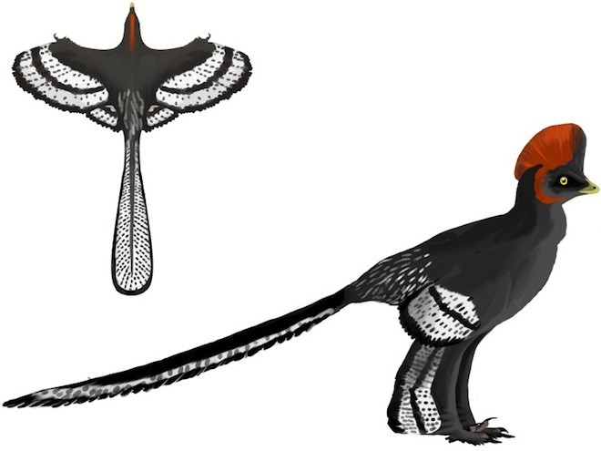
Anchiornis huxleyi
Поздняя юра (~160 млн лет назад) | Провинция Ляонин, Китай
В работе Li et al., 2010 изучено 29 участков экземпляра BMNHC PH828, по которым путем анализа меланосом восстановлена ок...
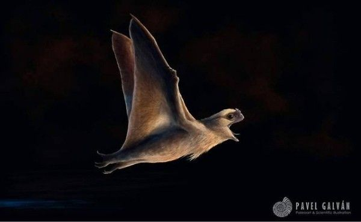
Anurognathidae
Средняя–поздняя юра (~164–160 млн лет назад) | Китай (Внутренняя Монголия и пров. Ляонин)
Сканирующая электронная микроскопия образцов двух анурогнатидных птерозавров (NJU-57003 и CAGS-Z070) выявила плотно упак...
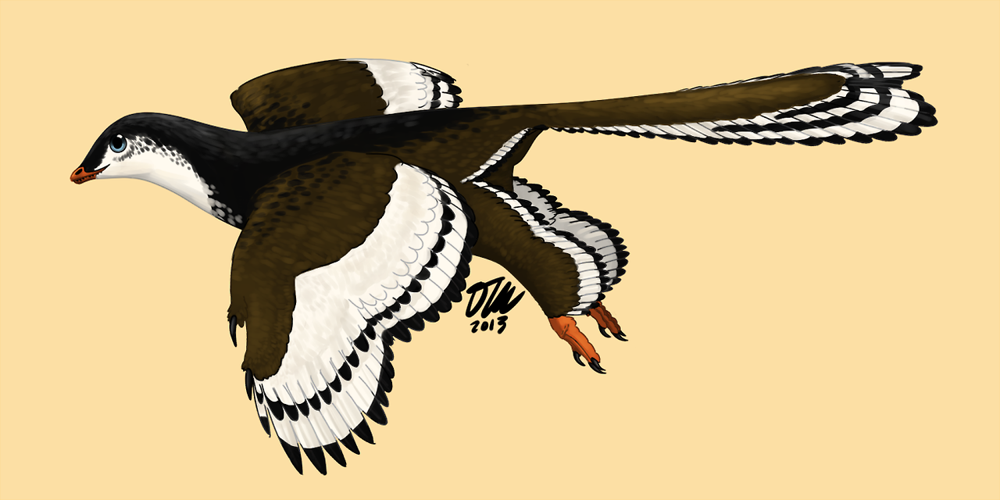
Archaeopteryx lithographica
Поздняя юра (~150 млн лет назад) | Германия (Бавария)
Проведено несколько исследований окраски перьев крыла археоптерикса. Судя по распределению меди (биомаркера темного пигм...
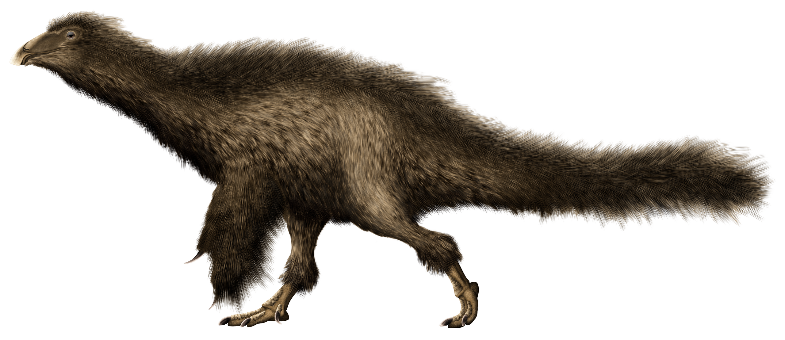
Beipiaosaurus
Ранний мел (~125 млн лет назад) | Провинция Ляонин, Китай
Форма меланосом в ископаемых перьях, отобранных из области шеи образца BMNHC PH000911, свидетельствует о коричневом окра...

Bohaiornithid (CUGB P1202)
Ранний мел (~120 млн лет назад) | Провинция Ляонин, Китай
Анализ меланосом образца CUGB P1202 показал, что контурные перья на голове, затылке и теле имели переливающийся окрас. М...
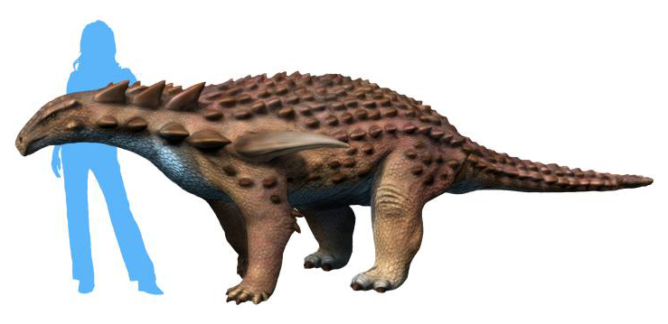
Borealopelta markmitchelli
Ранний мел (~110 млн лет назад) | Канада (провинция Альберта)
В работе Brown et al. (2017) исследован экземпляр TMP 2011.033.0001. Взято 147 проб с разных участков образца, что позво...
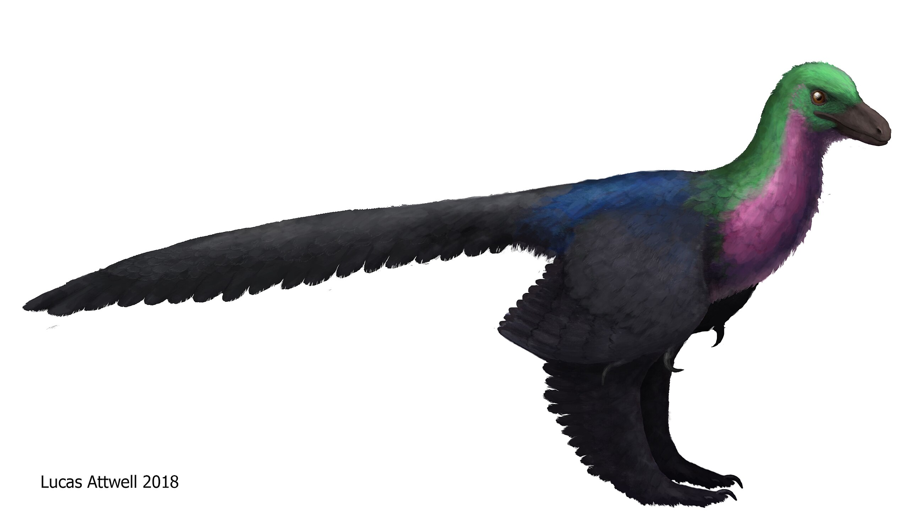
Caihong juji
Поздняя юра (~161 млн лет назад) | Провинция Хэбэй, Китай
В работе Hu et al. (2018) проведен анализ меланосом с 66 участков экземпляра PMoL-B00175. Согласно исследованию, основна...
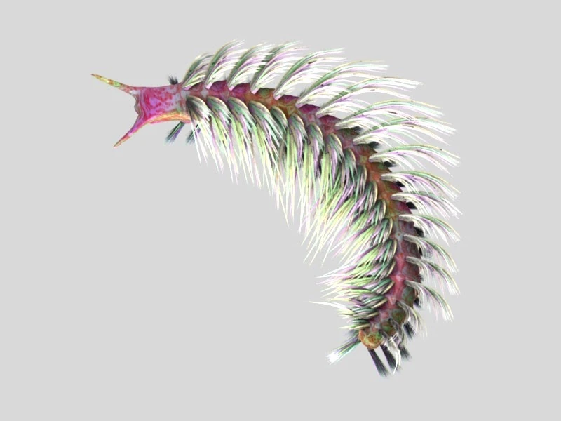
Canadia spinosa
Вторая эпоха кембрия (~508 млн лет назад) | Канада (Британская Колумбия)
На щетинках образца USNM 202335, принадлежащего полихетному червю Canadia spinosa, обнаружены параллельные бороздки с по...

Carcinosoma newlini
Поздний силур (~420 млн лет назад) | США (штат Индиана)
В работе Kjellesvig-Waering (1958) описан экземпляр Carcinosoma newlini из силурийского доломита Кокомо (Индиана), котор...
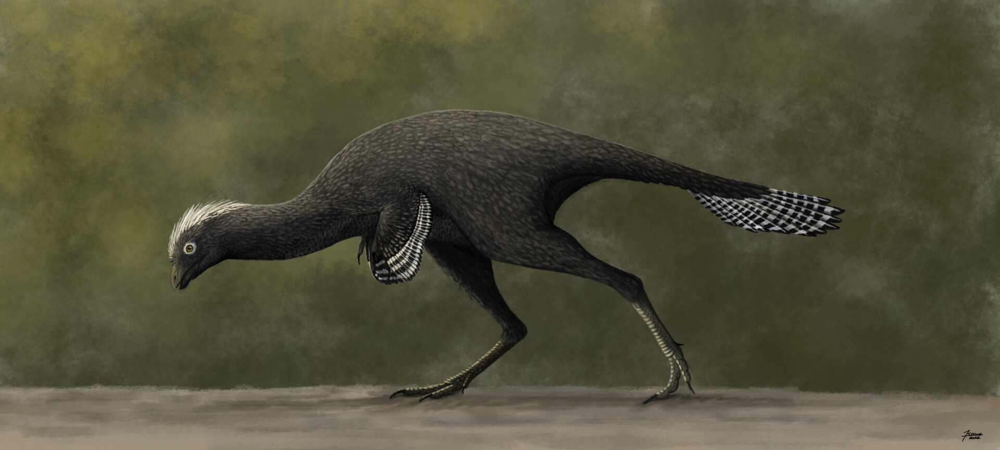
Caudipteryx zoui
Ранний мел (~125 млн лет назад) | Провинция Ляонин, Китай
Анализ сохранившихся перьев на различных участках тела указывает на преобладание темного (черного или темно-серого) окра...
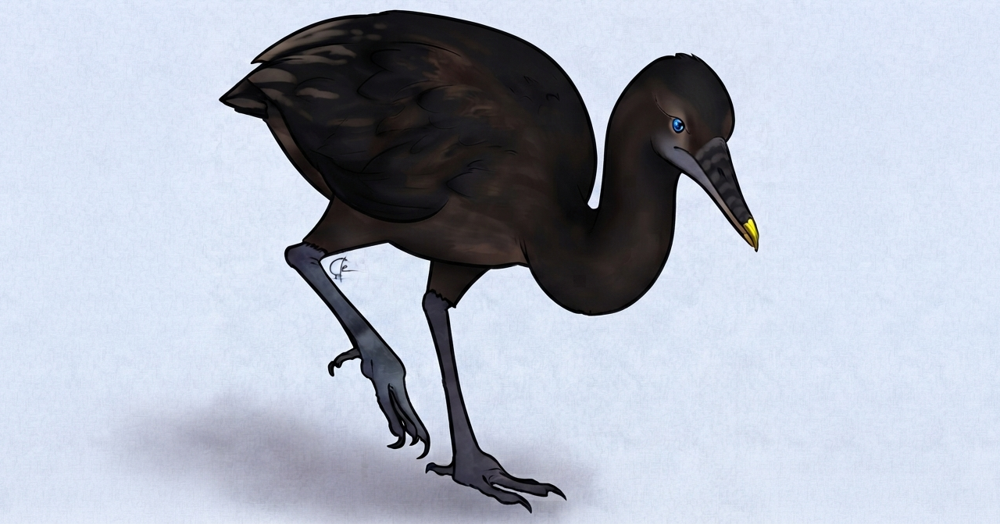
Changzuiornis ahgmi
Ранний мел (~122 млн лет назад) | Провинция Ляонин, Китай
Изучение отпечатков меланосом показало наличие удлиненных структур в перьях крыльев и хвоста, что свидетельствует о том,...
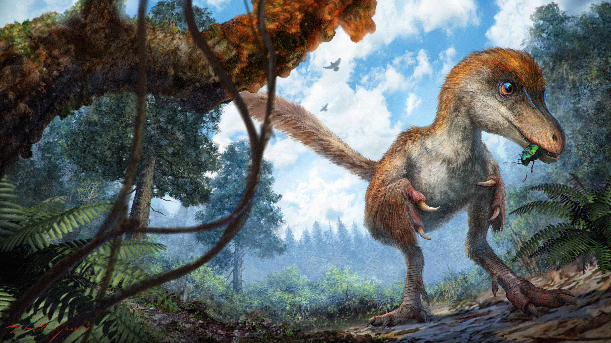
Coelurosauria indet. (DIP-V-15103)
Середина мела (~99 млн лет назад) | Мьянма (штат Качин, долина Хуконг)
В бирманском янтаре обнаружен кусок хвоста детеныша целурозавра (образец DIP-V-15103). Он сохранил следы прижизненной ок...

Confuciusornis sanctus
Ранний мел (~125 млн лет назад) | Провинции Ляонин и Хэбэй, Китай
В исследовании Zhang et al. (2010) были взяты образцы с периферии экземпляра IVPP V13171. Изучено более 200 фрагментов, ...
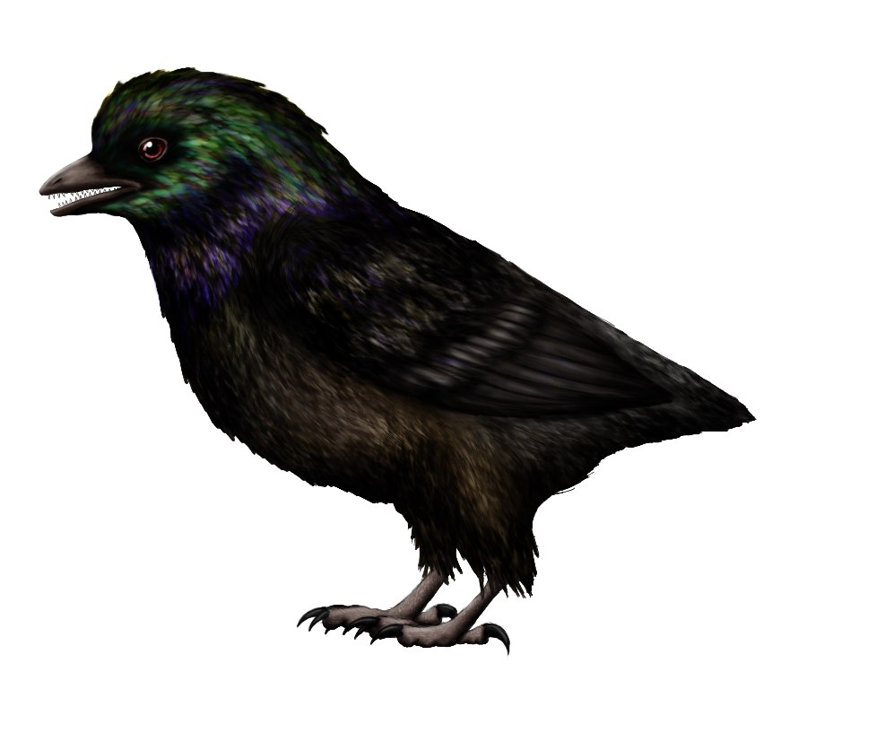
Cruralispennia multidonta
Ранний мел (~131 млн лет назад) | Провинция Хэбэй, Китай
Для изучения окраски было взято 5 проб с разных частей образца IVPP V21711: области возле черепа, левого и правого крыла...
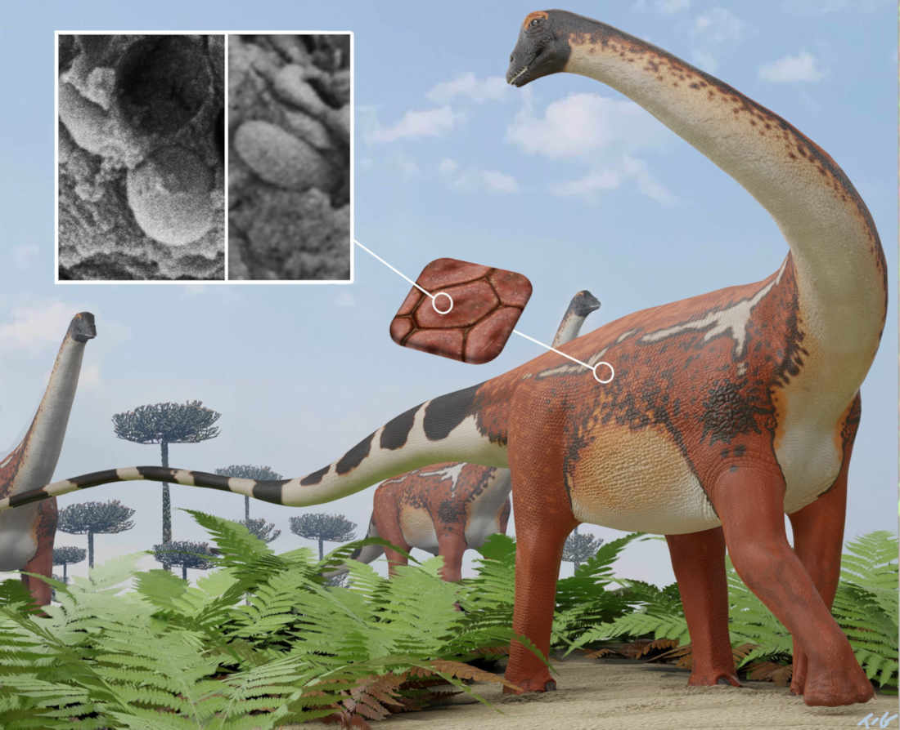
Diplodocus sp. (детеныш)
Поздняя юра (~150–145 млн лет назад) | США (штат Монтана)
В исследовании Gallagher et al., 2025 изучены экземпляры CMC VP 20857, CMC VP 20858, CMC VP 15915, CMC VP 10660, VP 1066...
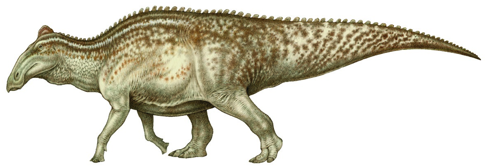
Edmontosaurus annectens
Поздний мел (~68–66 млн лет назад) | США (Северная Дакота, Вайоминг, Монтана)
На сегодняшний день найдено как минимум 5 ископаемых образцов эдмонтозавров (например, AMNH 5060, SMF R 4036 и NDGS 2000...

Enantiornithes indet. из бирманского янтаря (птенцы)
Середина мела (~99 млн лет назад) | Мьянма (штат Качин, долина Хуконг)
В бирманском янтаре найдены части птичьих крыльев и целый птенец энанциорниса. Визуальный анализ сохранившейся пигментац...
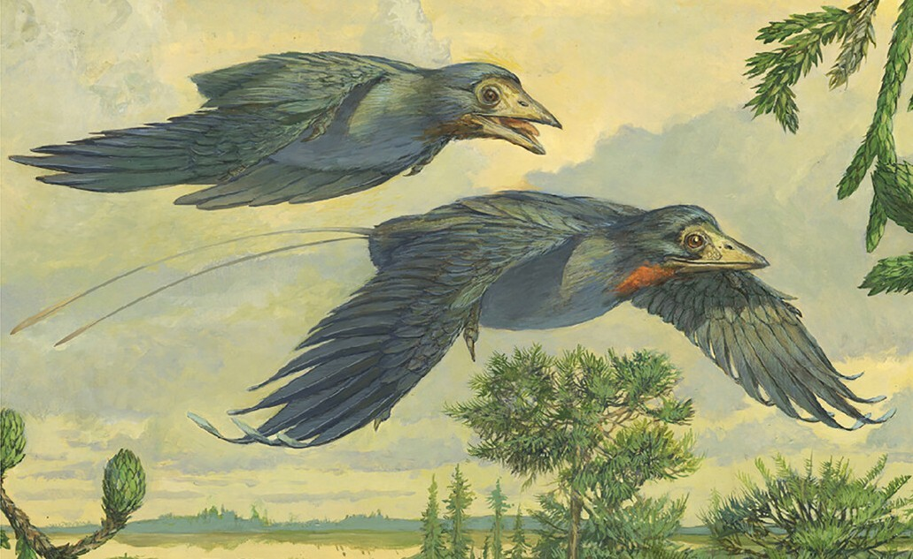
Eoconfuciusornis
Ранний мел (~131 млн лет назад) | Провинция Хэбэй, Китай
Для исследования окраски образца эоконфуциусорниса STM7-144 было взято 24 пробы из разных участков тела: с крыльев, хвос...
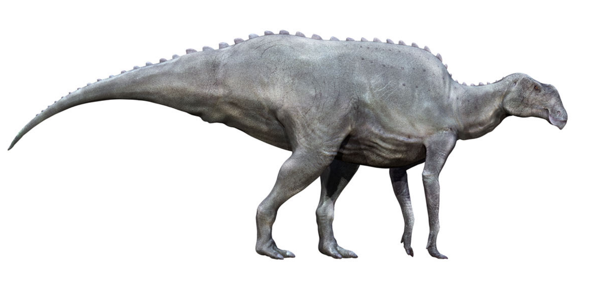
Hadrosauridae indet. (экз. YPMPU 016969)
Поздний мел | США
Сканирующая электронная микроскопия фрагмента кожи образца YPMPU 016969 показала аморфный органический слой без сохранен...
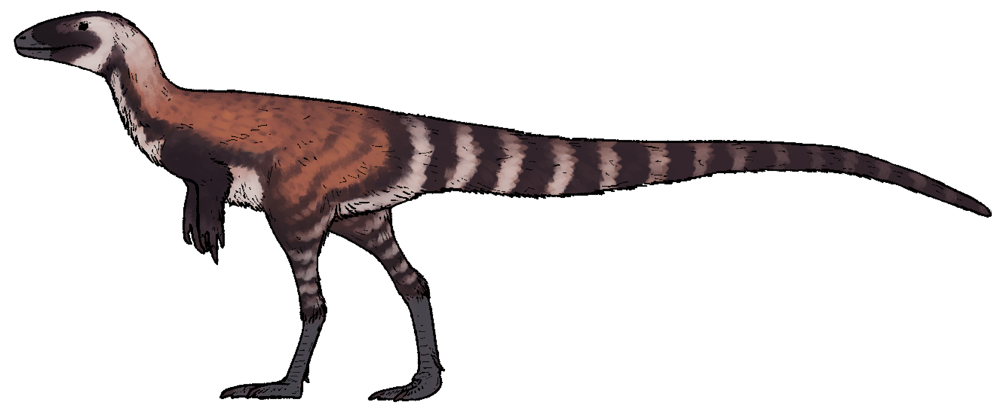
Huadanosaurus sinensis
Ранний мел (~124 млн лет назад) | Провинция Ляонин, Китай
Тело животного было покрыто нитевидным оперением. На хвосте чередовались светлые (вероятно, белые) и темные полосы. Темн...
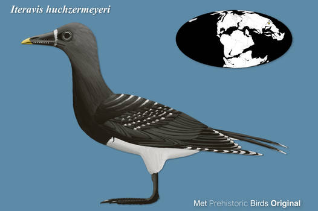
Iteravis huchzermeyeri
Ранний мел (~120 млн лет назад) | Провинция Ляонин, Китай
Пробы для исследования окраски Iteravis huchzermeyeri взяты с двух участков образца AGB5841: контурное перо (грудь) и ма...
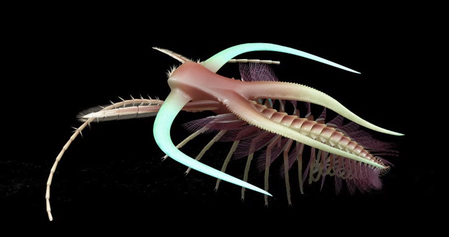
Marrella splendens
Вторая эпоха кембрия (~508 млн лет назад) | Канада (Британская Колумбия)
Электронная микроскопия образца AM F38262 выявила наличие параллельных микроскопических бороздок на наружных выростах го...
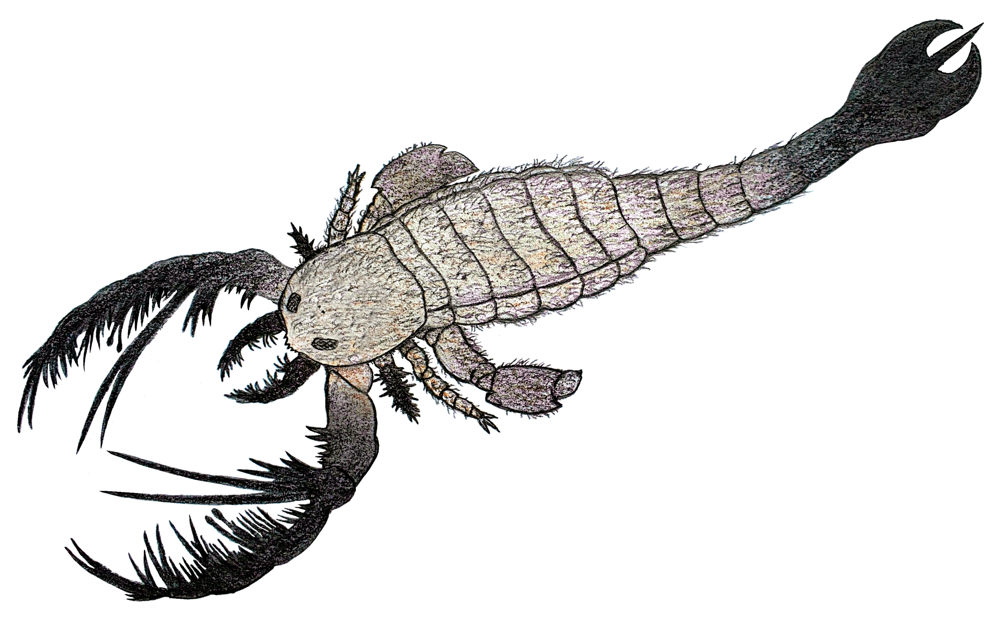
Megalograptus ohioensis
Поздний ордовик (~450 млн лет назад) | США (штат Огайо)
В статье Caster & Kjellesvig-Waering (1964) описана прижизненная окраска ракоскорпиона Megalograptus ohioensis. Органиче...

Microraptor sp.
Ранний мел (~120 млн лет назад) | Провинция Ляонин, Китай
Для поиска меланосом в образце BMNHC PH881 исследовано 26 проб с перьев по всему телу. Установлено, что микрораптор имел...
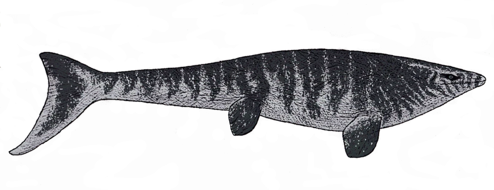
Platecarpus tympaniticus
Поздний мел (~84-81 млн лет назад) | США (штат Канзас)
В области глаз образца LACM 128319 были обнаружены сохранившиеся меланосомы. Сами меланосомы не дают информации о цвете ...

Protopteryx fengningensis
Ранний мел (131 млн лет назад) | Провинция Хэбэй, Китай
При исследовании образца STM7-143 взята проба с дистального (дальнего от тела) конца одного из внешних маховых перьев пр...
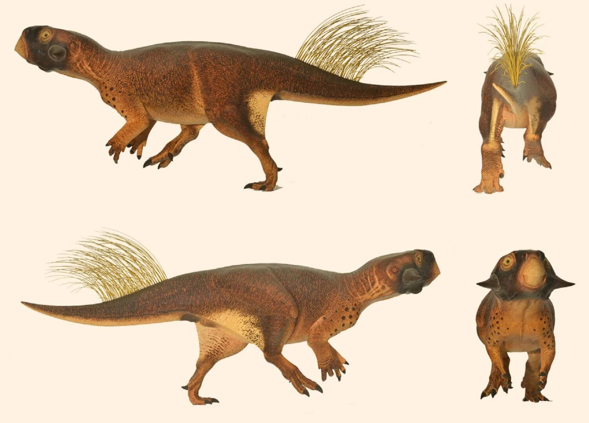
Psittacosaurus sp.
Ранний мел (~125 млн лет назад) | Провинция Ляонин, Китай
Исследования экземпляра SMF R 4970 позволили восстановить окраску всего тела животного, кроме небольшой части спины и ще...
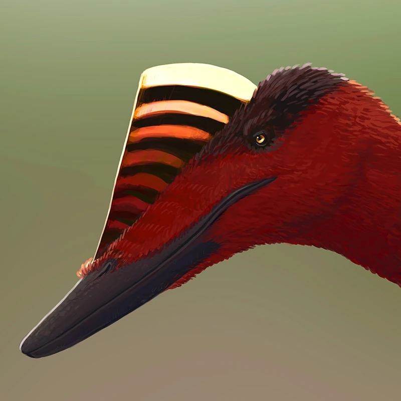
Pterorhynchus wellnhoferi
Юра (~164–160 млн лет) | Китай (Внутренняя Монголия)
На гребне образца CAGS02-IG-gausa-2/M 608 птерозавра Pterorhynchus wellnhoferi сохранились следы, образующие цветовой уз...
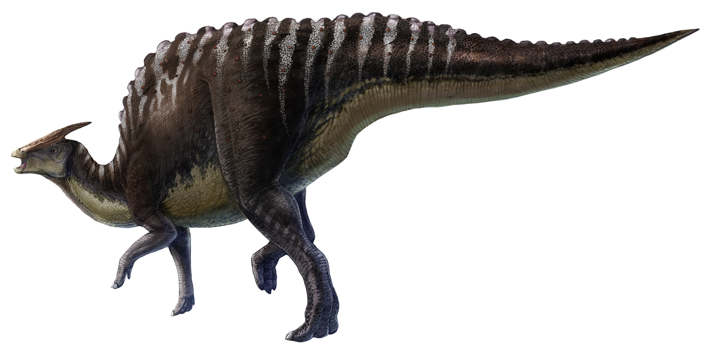
Saurolophus angustirostris
Поздний мел (~70 млн лет назад) | Монголия (пустыня Гоби)
На хвосте динозавра обнаружено чередование зон разной чешуи, откуда делается вывод, что он, вероятнее всего, имел вертик...
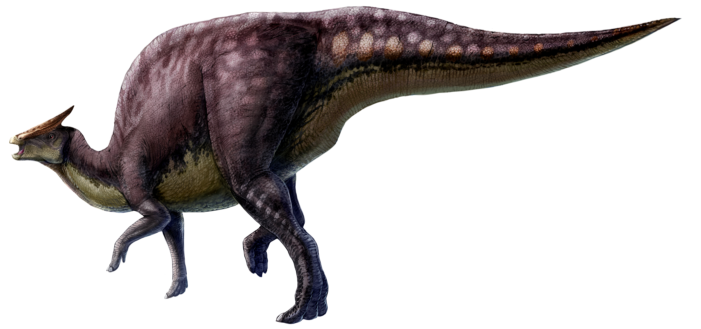
Saurolophus osborni
Поздний мел (~70 млн лет назад) | Канада (провинция Альберта)
На ископаемой коже хвоста динозавра разные по размеру чешуйки группируются в хаотичные мозаичные узоры. Предполагается, ...
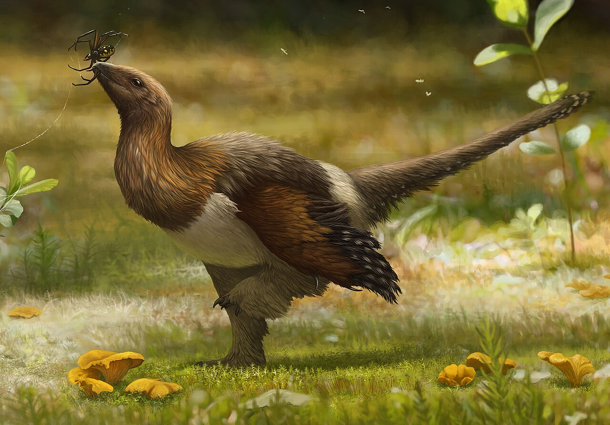
Serikornis sungei
Поздняя юра (~160 млн лет назад) | Провинция Ляонин, Китай
Окраска Serikornis sungei больше обсуждается в СМИ, чем в научных публикациях. В статье Lefèvre et al. (2017), где описа...
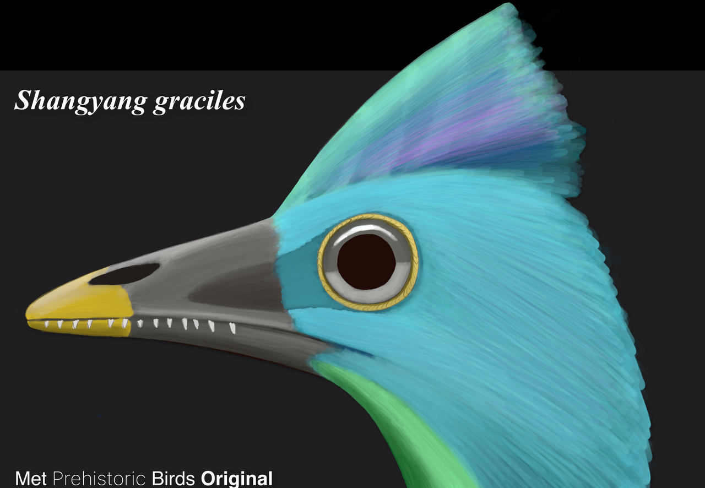
Shangyang sp.
Ранний мел (~120 млн лет назад) | Провинция Ляонин, Китай
У образца IVPP V26899 исследована окраска хохолка. Плотная асимметричная упаковка найденных в нем палочковидных меланосо...
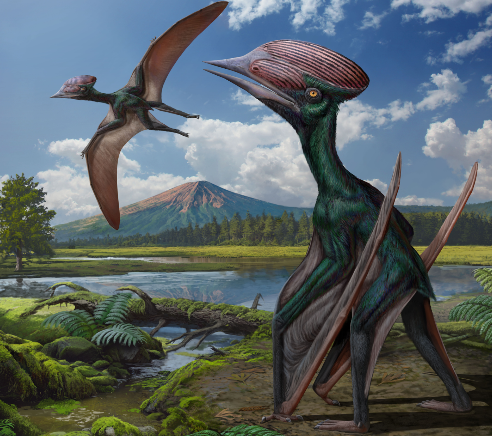
Sinopterus dongi
Ранний мел (~120 млн лет) | Провинция Ляонин, Китай
В работе Wu et al., 2026 изучен образец CUGB-P2201 птерозавра Sinopterus dongi. Исследователи сообщают о слоистом внутре...

Sinornithosaurus millenii
Ранний мел (~125 млн лет назад) | Провинция Ляонин, Китай
В образце IVPP V12811 были обнаружены скопления как эумеланосом (отвечающих за черный/серый цвет), так и феомеланосом (о...
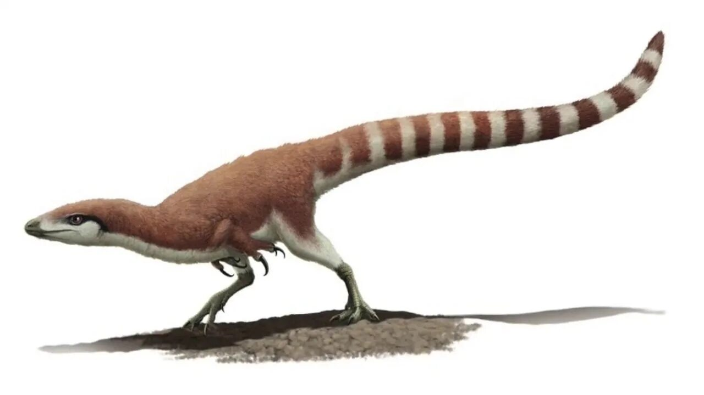
Sinosauropteryx prima
Ранний мел (~124 млн лет назад) | Провинция Ляонин, Китай
Окраска животного служила камуфляжем на открытой местности. Спина была темной, а живот — светлым. Хвост был украшен конт...

Stenopterygius sp.
Ранняя юра (~180 млн лет назад) | Германия (Баден-Вюртемберг)
Окраска ихтиозавров исследовалась несколько раз. Сначала в работе Lindgren et al. (2014) был изучен хвост образца YORYM ...

Tupandactylus imperator
Ранний мел (~115 млн лет назад) | Бразилия (штат Сеара)
Исследование Tupandactylus imperator (MCT.R.1884) из раннемеловой формации Крато в Бразилии показало, что форма меланосо...
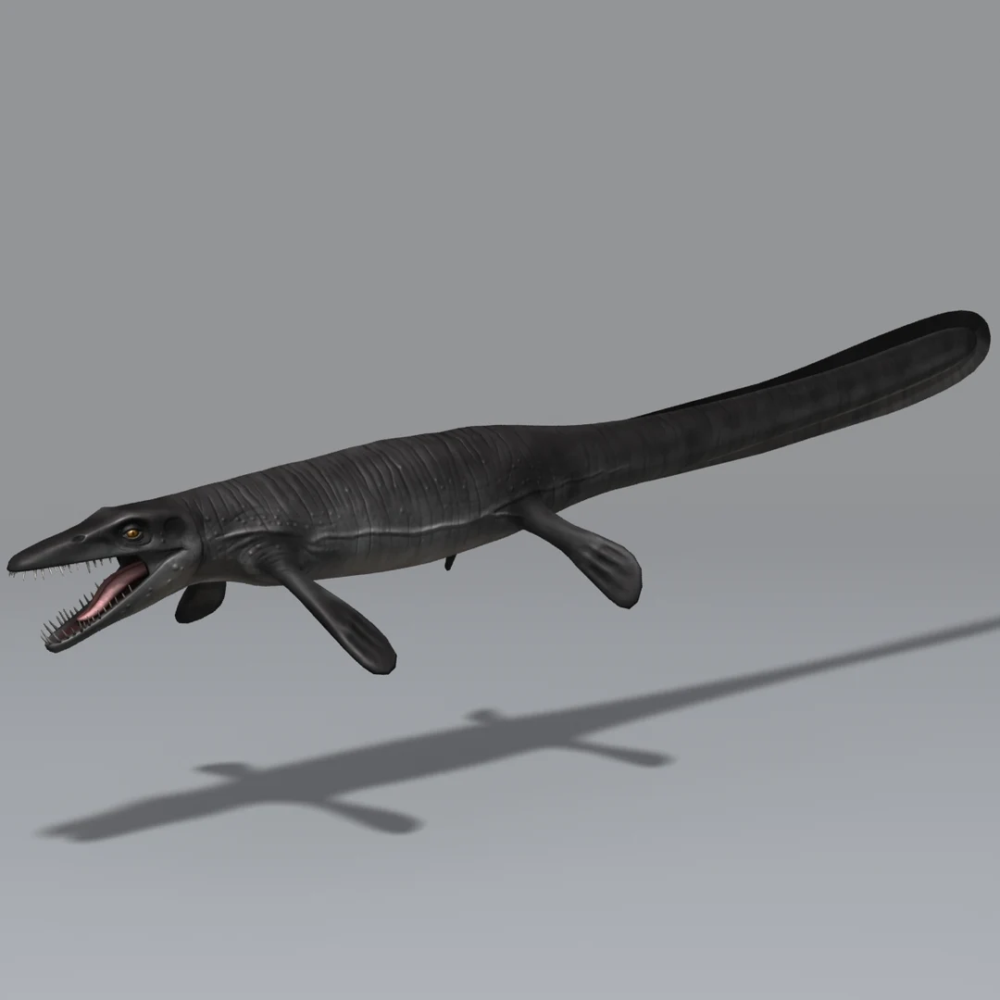
Tylosaurus nepaeolicus
Поздний мел (~85-80 млн лет назад) | США (штат Канзас)
В чешуе экземпляра SMU 76532, принадлежащего мозазавру Tylosaurus nepaeolicus, обнаружены структуры, по форме и размерам...
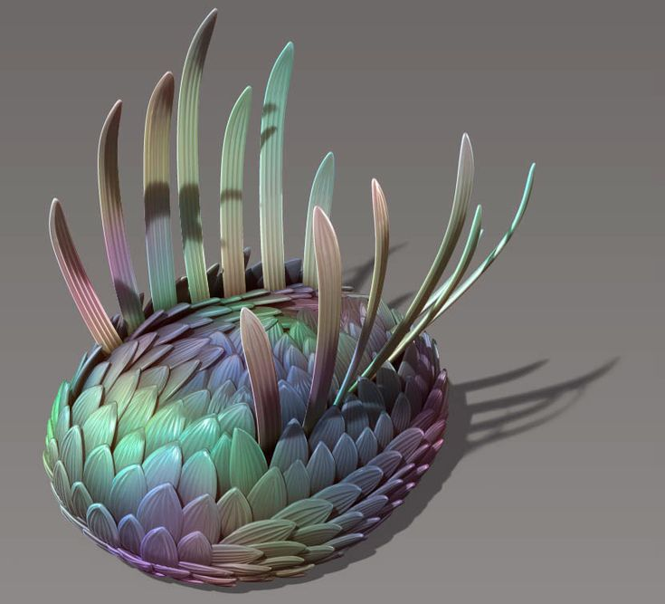
Wiwaxia corrugata
Вторая эпоха кембрия (~508 млн лет назад) | Канада (Британская Колумбия)
В работе Parker (1998) исследовано несколько образцов Wiwaxia corrugata. На поверхности склеритов были выявлены параллел...
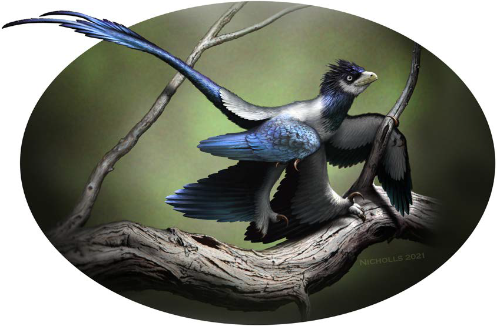
Wulong bohaiensis (молодая особь)
Ранний мел (~120 млн лет назад) | Провинция Ляонин, Китай
В Croudace et al. (2023) изучен образец DNHM D2933 годовалой особи Wulong bohaiensis. Анализ показал с высокой вероятнос...

Yi qi
Средняя–поздняя юра (~160 млн лет назад) | Провинция Хэбэй, Китай
Yi qi впервые описан в публикации Xu et al. (2015) по образцу STM 31-2. Для исследования меланосом в перьях взяты пробы ...
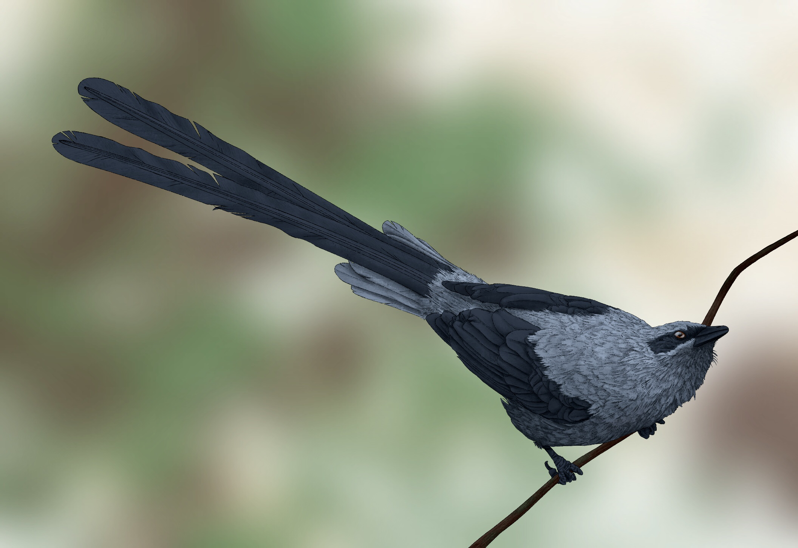
Yuanchuavis kompsosoura
Ранний мел (~120 млн лет назад) | Провинция Ляонин, Китай
В работе Wang et al. (2021) изучены меланосомы в хвостовых перьях образца IVPP V27883. Хвост птицы имел контрастную окра...

Аммониты
Триас, юра, мел | Глобальное распространение (Россия, США, Мадагаскар, Франция, Польша и др.)
В обзоре Mapes и Larson (2015) обобщены все известные на тот момент случаи сохранения окраски у аммоноидей, охватывающие...

Мезозойские млекопитающие
Юра, мел | Китай
В работе Li et al. (2025) исследована окраска 6 мезозойских видов млекопитающих: юрские Arboroharamiya fuscus, Vilevolod...
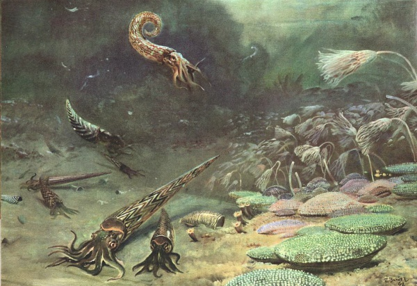
Прямораковинные головоногие
Ордовик, силур, девон, карбон, пермь, триас | Глобальное распространение (Швеция, Чехия, США и др.)
На данный момент найдено множество раковин прямораковинных головоногих моллюсков со следами прижизненной окраски. Они пр...
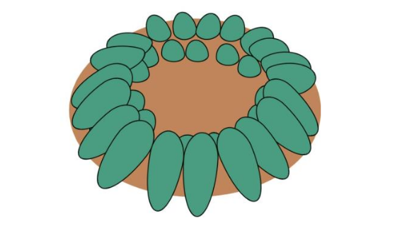
Скорлупа яиц
Мел | США, Китай, Монголия, Аргентина, Франция
В работе Wiemann et al. (2015) исследуется окраска яичной скорлупы овирапторида Heyuannia huangi по молекулярным маркера...
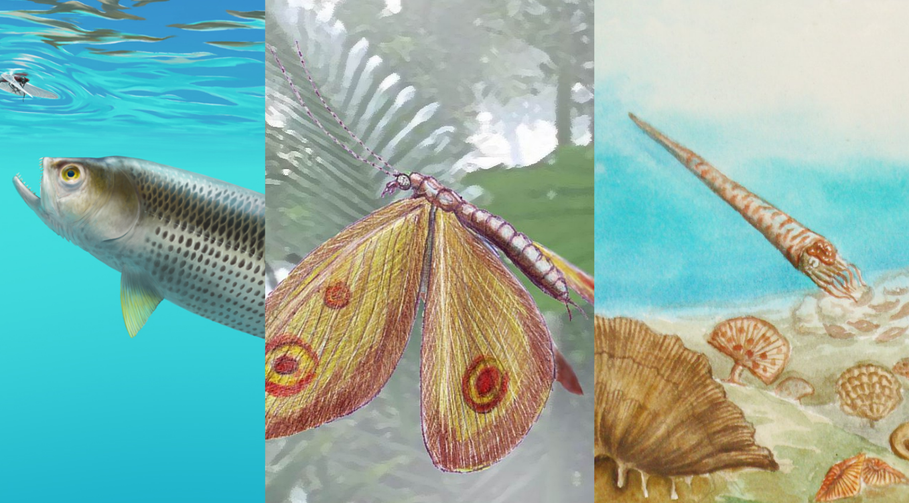
Слабо изменившиеся животные
Девон, карбон, пермь, триас, юра, мел | Глобальное распространение (США, Китай, Германия, Великобритания и др.)
Чешуя многих ископаемых рыб сохранила прижизненные паттерны окраски. У мезозойских насекомых (например, сетчатокрылых на...
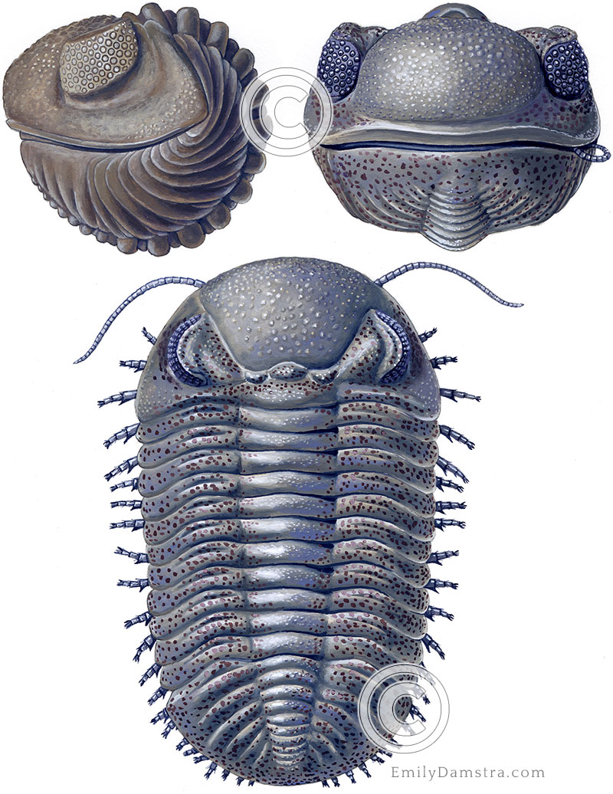
Трилобиты
Кембрий, ордовик, силур, девон, карбон | Глобальное распространение (США, Германия, Россия и др.)
У многих видов трилобитов на панцирях и задних хвостовых щитах (пигидиях) задокументированы прижизненные узоры в виде те...